Piano lessons in Denver.
Chord-chart piano for pop, rock, and simpler jazz. In your home or online. Founding rates from $60 an hour, every rate published.
Sit down and play songs.
Piano lessons here make you the person who can sit down and play real songs from a chord chart and by ear, in pop, rock, and slower, simpler jazz. I don't teach notation, and you won't need it. We learn how the chords work, how they interact, and how to hear what a song is doing.
Full honesty, because you're deciding whether to hire me: I'm a little rusty on the piano today. The hard Steely Dan stuff would take me a couple of days to brush back up. What I am, reliably, is a chord-chart player, and that's exactly the piano I teach. If you're aiming at classical repertoire and sight-reading, I'm the wrong teacher and I'll say so. If you want to play songs at a piano, for yourself or the people around you, I'm the right one.
I couldn't walk past a piano either.
It started with a small Yamaha keyboard one kindergarten Christmas, early Sunday mornings, and playing along with the radio. My parents tell me I got piano lessons as a kid. I don't remember a single one.
Pianos kept pulling at me anyway. At other people's houses I would skip the social graces and want to play songs all night. Eventually I bought a $400 piano so I could indulge that properly at home and go to dinner parties without being the disruptive one.
When I sat down to really learn how chords work, I picked Deacon Blues by Steely Dan first, on the theory that if you learn the hard song first, everything after seems easy. Your version of that song will be different. The method stands: your taste sets the target, and we build the technique the target needs.
“You were extremely patient with me as you were teaching me Giant Steps on the piano, and I was only in 4th grade.”
A 4th grader, a Coltrane tune, and the patience to get there. Kids get real music here too. Kids' lessons run 45 minutes, in your home, with a parent home.
The chord-chart hall of fame.
This is exactly the piano I teach: sit down, read the chart, hear the song, play it. Carole King and Billy Joel built careers on it. Aretha played her own piano, and it's half the reason those records hit.
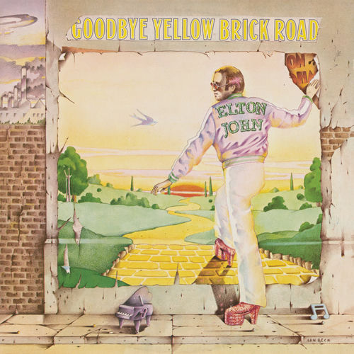
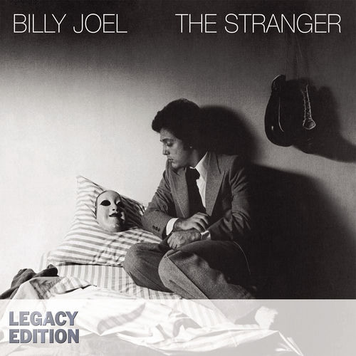
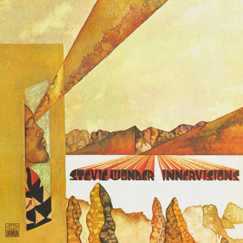
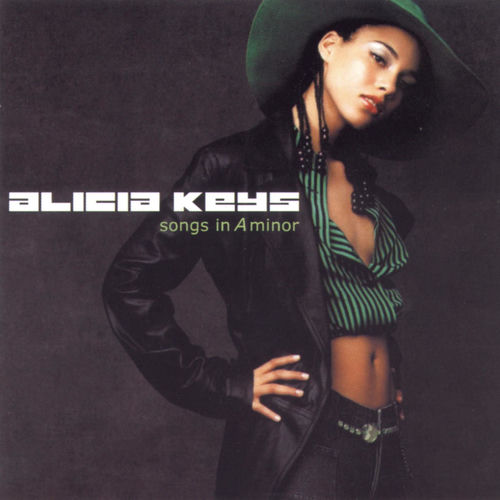
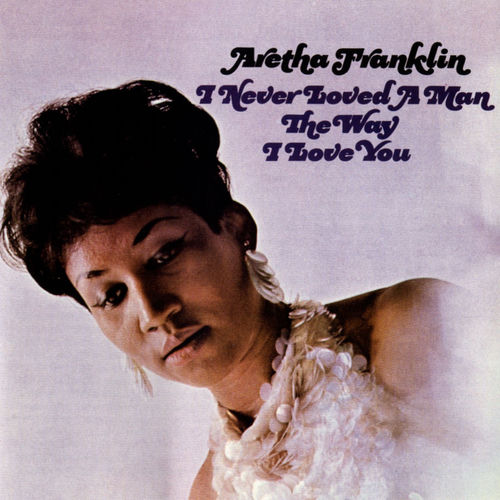
Carole King, Tapestry · Elton John, Goodbye Yellow Brick Road · Billy Joel, The Stranger · Stevie Wonder, Innervisions · Alicia Keys, Songs in A Minor · Aretha Franklin, I Never Loved a Man the Way I Love You
Slower, simpler, deeper.
I teach slower, simpler jazz, and that's not a consolation prize. Bill Evans and Monk prove a few right notes beat a hundred fast ones. The Köln Concert is one man improvising for an hour, and people have loved it for fifty years.
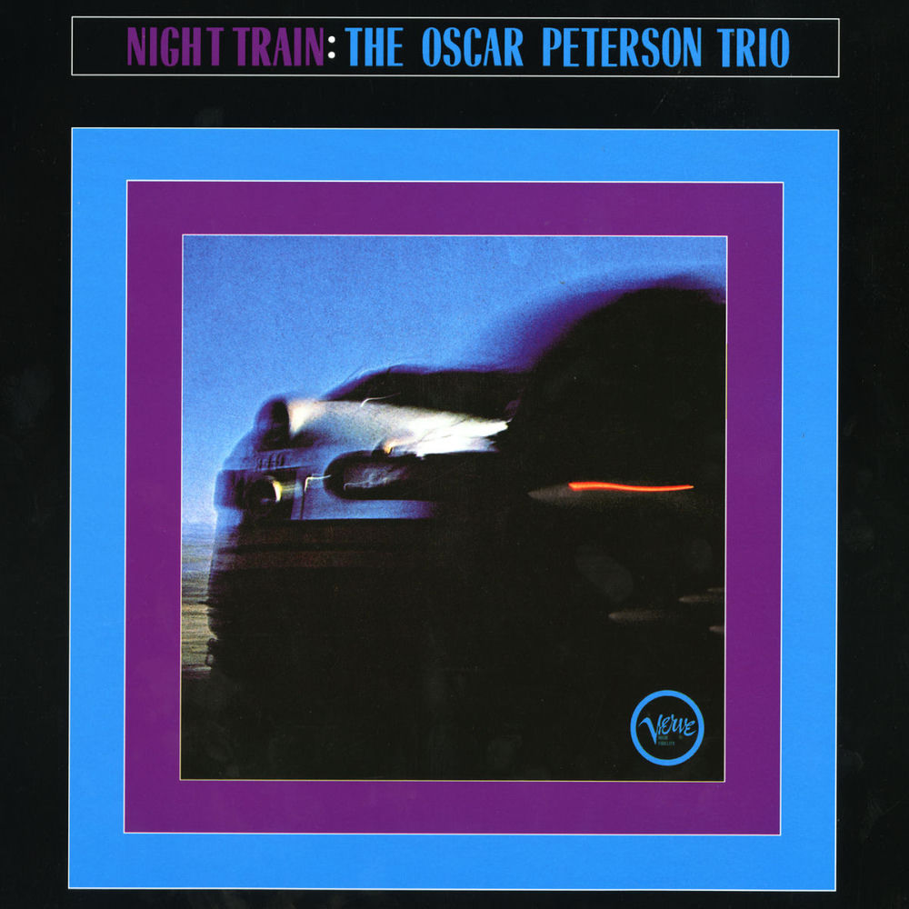
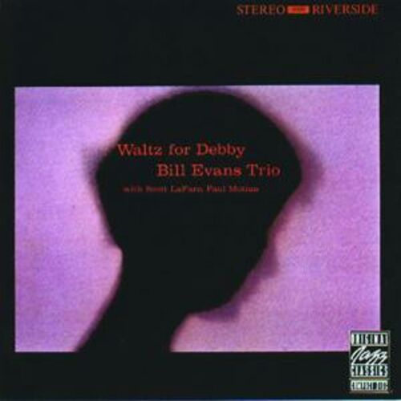
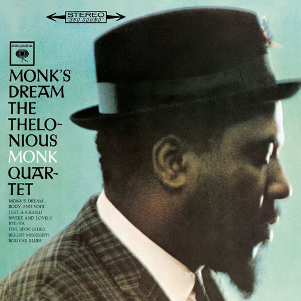
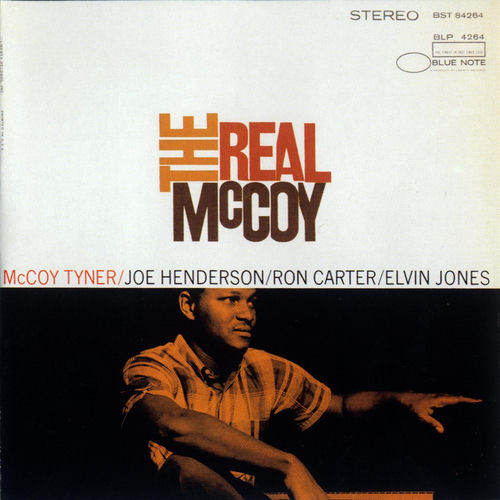
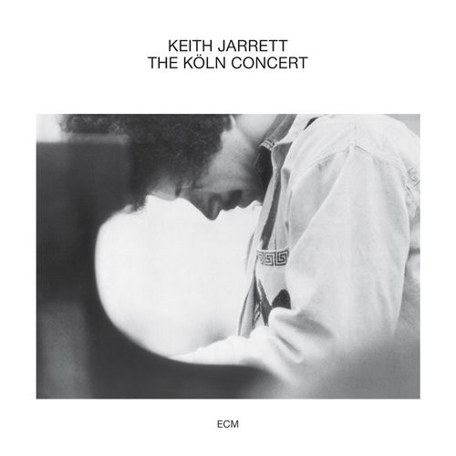
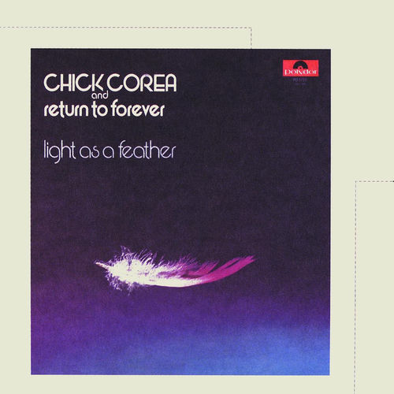
Oscar Peterson, Night Train · Bill Evans, Waltz for Debby · Thelonious Monk, Monk's Dream · McCoy Tyner, The Real McCoy · Keith Jarrett, The Köln Concert · Chick Corea, Light as a Feather
The piano that makes rooms move.
Little Richard invented a whole job with this instrument. Ray, Nina, and Dr. John each took it somewhere different, and Herbie plugged it in. When you can play from a chart, every one of these doors is open.
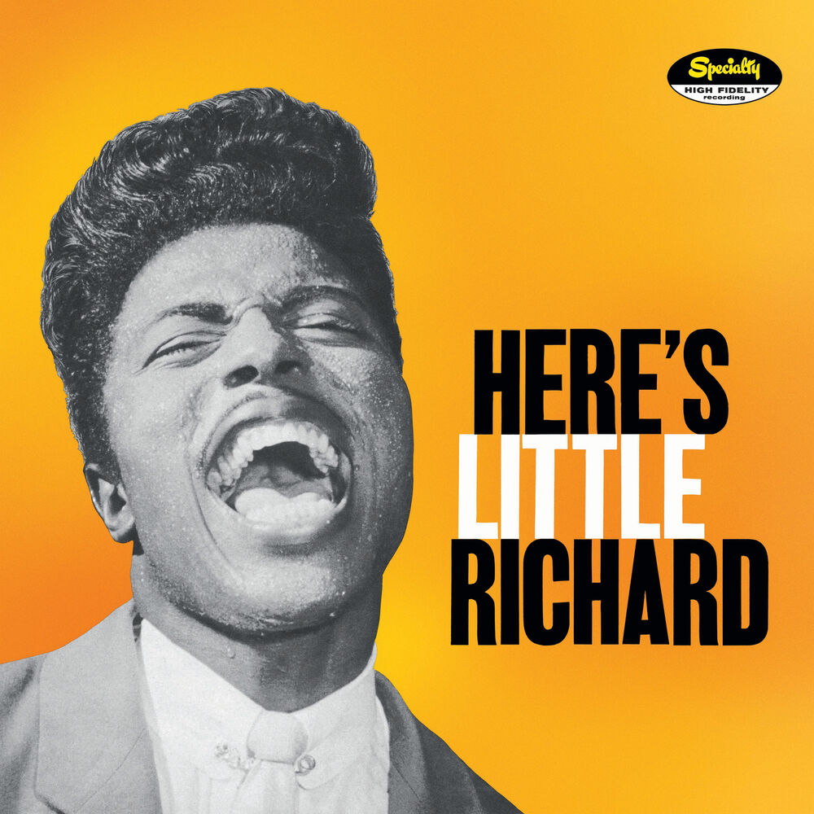
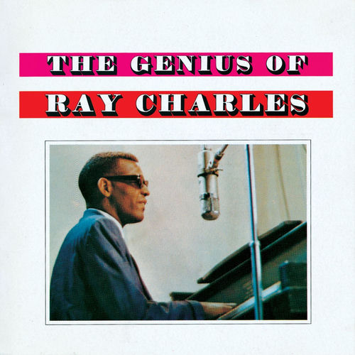
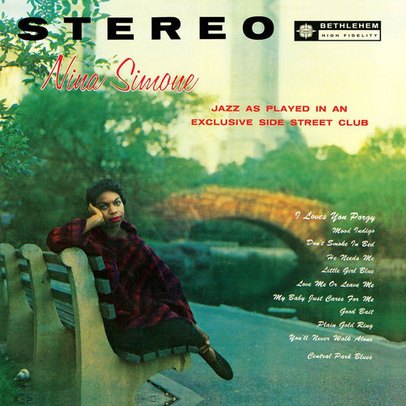
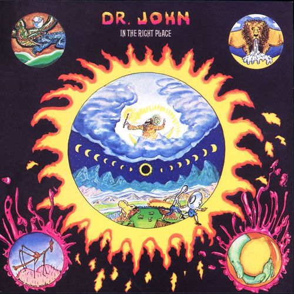
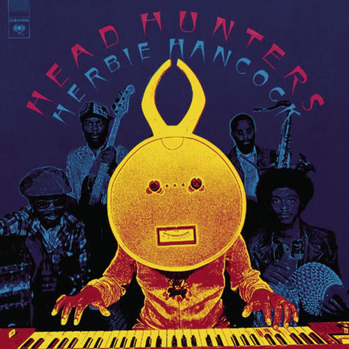
Little Richard, Here's Little Richard · Ray Charles, The Genius of Ray Charles · Nina Simone, Little Girl Blue · Dr. John, In the Right Place · Herbie Hancock, Head Hunters
Why people buy a piano in the first place.
Playing at home for yourself is a complete destination. These are the records for that, songs for the end of a day. Charlie Brown counts. It has always counted.
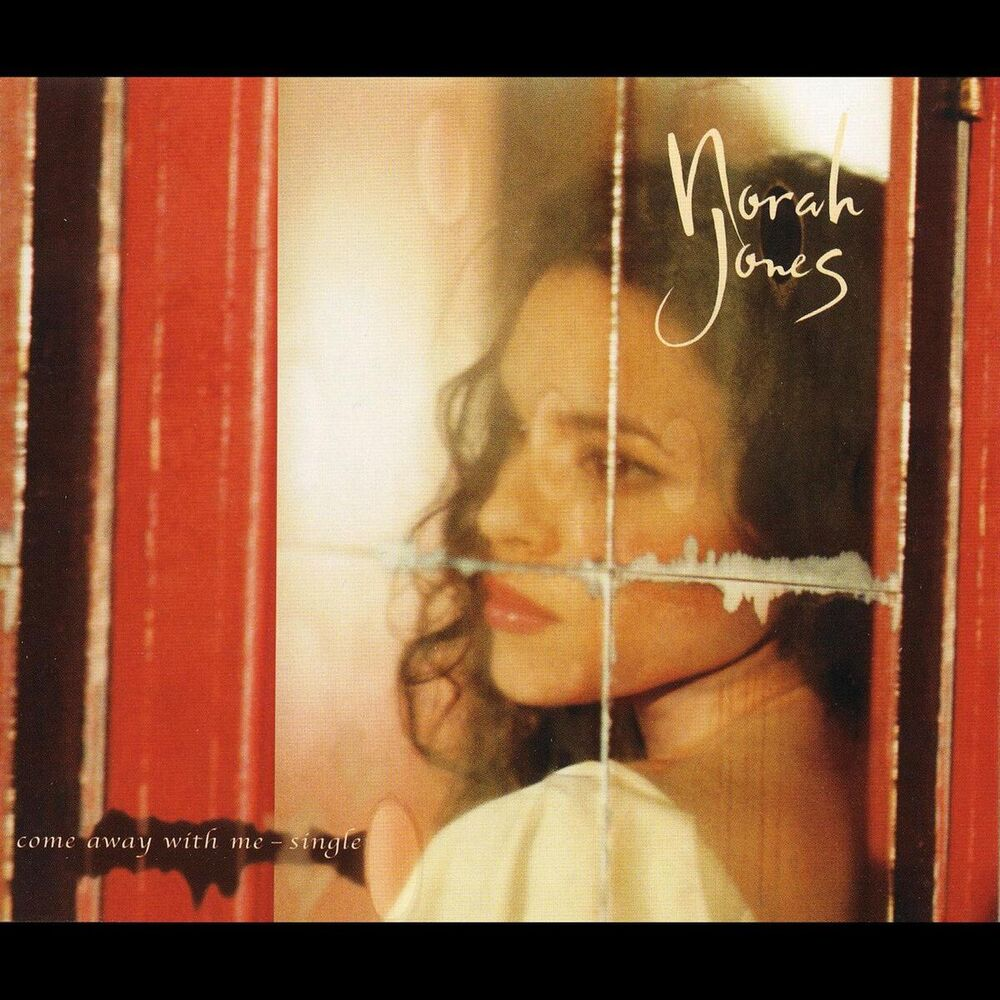
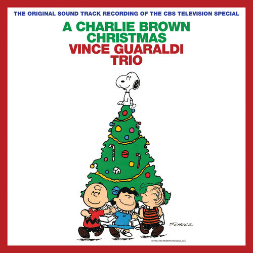

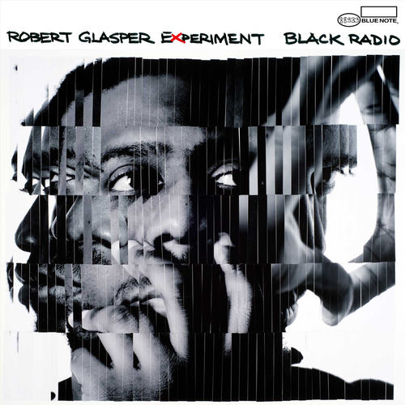
Norah Jones, Come Away with Me · Vince Guaraldi, A Charlie Brown Christmas · Fiona Apple, Tidal · Chris Martin, A Rush of Blood to the Head · Robert Glasper, Black Radio